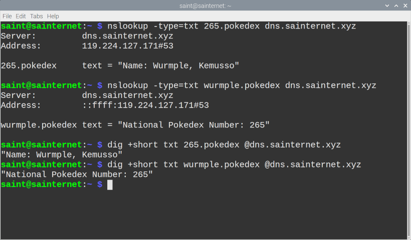

Filtered DNS
Sainternet offers validating, recursive, caching, mostly specification compliant, filtered DNS servers with a zero logging policy, served over all your favourite acronyms.
| Protocol | Address | Port |
|---|---|---|
| HTTPS | dns.sainternet.xyz | TCP 443 |
| HTTP/3 | dns.sainternet.xyz | UDP 443 |
| TCP | 119.224.127.171 | TCP 53 |
| TLS | dns.sainternet.xyz | TCP 853 |
| UDP | 119.224.127.171 | UDP 53 |
| QUIC | dns.sainternet.xyz | UDP 784 UDP 853 UDP 8853 |
Sainternet blocks many domains known to be associated with unsavoury behaviours (including but not limited to advertising, botnets, malware, spam and telemetry), using a variety of methods updated regularly.
Sainternet does not and will not block domains based upon ethical, moral, personal, political or religious belief, nor upon any lack thereof.
Note: Sainternet intentionally disables Mozilla's default DNS over HTTPS and Apple's iCloud Private Relay to prevent them from bypassing Sainternet.
Pokédex over DNS

Sainternet is home to the world's first (…and only?) DNS driven TXT record based National Pokédex-over-DNS!
A somewhat fun (ab)use of DNS enabling one to query a Pokémon species name (currently supported: English) in order to receive its National Pokédex Number (NPN), or query an NPN (zero padding optional) in order to receive the Pokémon species name (currently supported: English, Japanese Rōmaji).